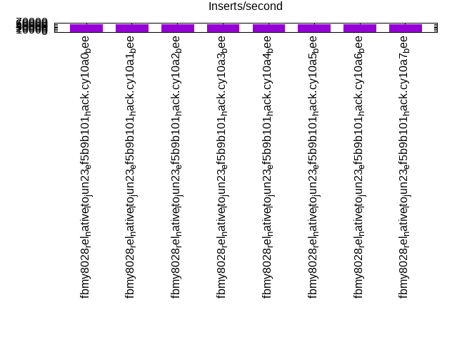
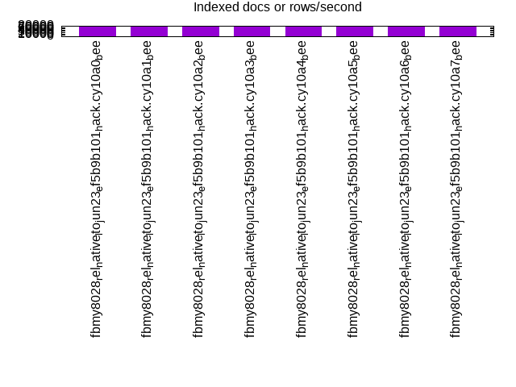
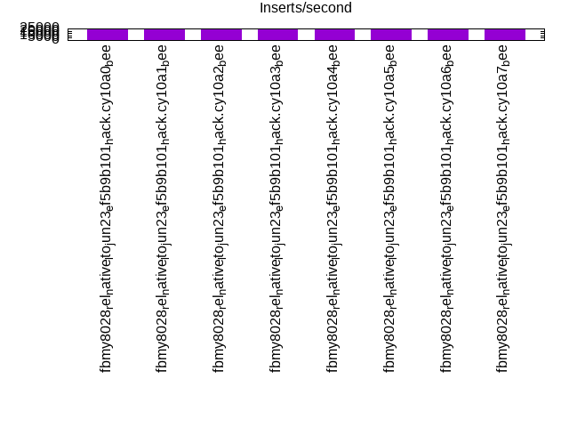
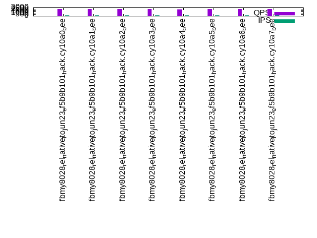
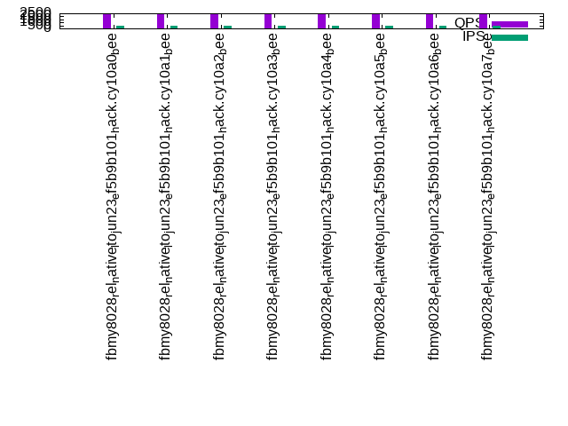

This is a report for the insert benchmark with 20M docs and 1 client(s). It is generated by scripts (bash, awk, sed) and Tufte might not be impressed. An overview of the insert benchmark is here and a short update is here. Below, by DBMS, I mean DBMS+version.config. An example is my8020.c10b40 where my means MySQL, 8020 is version 8.0.20 and c10b40 is the name for the configuration file.
The test server has 8 AMD cores, 16G RAM and an NVMe SSD. It is described here as the Beelink. The benchmark was run with 1 client and there were 1 or 3 connections per client (1 for queries or inserts without rate limits, 1+1 for rate limited inserts+deletes). It uses 1 table. It loads 20M rows per table without secondary indexes, creates secondary indexes, then inserts 100M rows per table with a delete per insert to avoid growing the table. It then does 3 read+write tests for 3600s each that do queries as fast as possible with 100, 500 and then 1000 inserts/second/client concurrent with the queries and 1000 deletes/second to avoid growing the table. The database is cached by the storage engine. Clients and the DBMS share one server. The per-database configs are in the per-database subdirectories here.
The tested DBMS are:
The numbers are inserts/s for l.i0 and l.i1, indexed docs (or rows) /s for l.x and queries/s for q*.2. The values are the average rate over the entire test for inserts (IPS) and queries (QPS). The range of values for IPS and QPS is split into 3 parts: bottom 25%, middle 50%, top 25%. Values in the bottom 25% have a red background, values in the top 25% have a green background and values in the middle have no color. A gray background is used for values that can be ignored because the DBMS did not sustain the target insert rate. Red backgrounds are not used when the minimum value is within 80% of the max value.
| dbms | l.i0 | l.x | l.i1 | q100.1 | q500.1 | q1000.1 |
|---|---|---|---|---|---|---|
| fbmy8028_rel_native_lto_jun23_ef5b9b101_hack.cy10a0_bee | 60976 | 77907 | 23624 | 2472 | 2422 | 2439 |
| fbmy8028_rel_native_lto_jun23_ef5b9b101_hack.cy10a1_bee | 61350 | 77308 | 23878 | 2468 | 2444 | 2448 |
| fbmy8028_rel_native_lto_jun23_ef5b9b101_hack.cy10a2_bee | 61350 | 78210 | 23552 | 2543 | 2426 | 2426 |
| fbmy8028_rel_native_lto_jun23_ef5b9b101_hack.cy10a3_bee | 60606 | 77308 | 22894 | 2459 | 2405 | 2424 |
| fbmy8028_rel_native_lto_jun23_ef5b9b101_hack.cy10a4_bee | 61920 | 77308 | 23691 | 2369 | 2409 | 2428 |
| fbmy8028_rel_native_lto_jun23_ef5b9b101_hack.cy10a5_bee | 60976 | 78210 | 23574 | 2458 | 2434 | 2438 |
| fbmy8028_rel_native_lto_jun23_ef5b9b101_hack.cy10a6_bee | 61538 | 77606 | 23781 | 2460 | 2450 | 2443 |
| fbmy8028_rel_native_lto_jun23_ef5b9b101_hack.cy10a7_bee | 61350 | 77606 | 23883 | 2543 | 2438 | 2411 |
This table has relative throughput, throughput for the DBMS relative to the DBMS in the first line, using the absolute throughput from the previous table. Values less than 0.95 have a yellow background. Values greater than 1.05 have a blue background.
| dbms | l.i0 | l.x | l.i1 | q100.1 | q500.1 | q1000.1 |
|---|---|---|---|---|---|---|
| fbmy8028_rel_native_lto_jun23_ef5b9b101_hack.cy10a0_bee | 1.00 | 1.00 | 1.00 | 1.00 | 1.00 | 1.00 |
| fbmy8028_rel_native_lto_jun23_ef5b9b101_hack.cy10a1_bee | 1.01 | 0.99 | 1.01 | 1.00 | 1.01 | 1.00 |
| fbmy8028_rel_native_lto_jun23_ef5b9b101_hack.cy10a2_bee | 1.01 | 1.00 | 1.00 | 1.03 | 1.00 | 0.99 |
| fbmy8028_rel_native_lto_jun23_ef5b9b101_hack.cy10a3_bee | 0.99 | 0.99 | 0.97 | 0.99 | 0.99 | 0.99 |
| fbmy8028_rel_native_lto_jun23_ef5b9b101_hack.cy10a4_bee | 1.02 | 0.99 | 1.00 | 0.96 | 0.99 | 1.00 |
| fbmy8028_rel_native_lto_jun23_ef5b9b101_hack.cy10a5_bee | 1.00 | 1.00 | 1.00 | 0.99 | 1.00 | 1.00 |
| fbmy8028_rel_native_lto_jun23_ef5b9b101_hack.cy10a6_bee | 1.01 | 1.00 | 1.01 | 1.00 | 1.01 | 1.00 |
| fbmy8028_rel_native_lto_jun23_ef5b9b101_hack.cy10a7_bee | 1.01 | 1.00 | 1.01 | 1.03 | 1.01 | 0.99 |
This lists the average rate of inserts/s for the tests that do inserts concurrent with queries. For such tests the query rate is listed in the table above. The read+write tests are setup so that the insert rate should match the target rate every second. Cells that are not at least 95% of the target have a red background to indicate a failure to satisfy the target.
| dbms | q100.1 | q500.1 | q1000.1 |
|---|---|---|---|
| fbmy8028_rel_native_lto_jun23_ef5b9b101_hack.cy10a0_bee | 100 | 499 | 998 |
| fbmy8028_rel_native_lto_jun23_ef5b9b101_hack.cy10a1_bee | 100 | 499 | 998 |
| fbmy8028_rel_native_lto_jun23_ef5b9b101_hack.cy10a2_bee | 100 | 499 | 997 |
| fbmy8028_rel_native_lto_jun23_ef5b9b101_hack.cy10a3_bee | 100 | 499 | 998 |
| fbmy8028_rel_native_lto_jun23_ef5b9b101_hack.cy10a4_bee | 100 | 499 | 998 |
| fbmy8028_rel_native_lto_jun23_ef5b9b101_hack.cy10a5_bee | 100 | 499 | 998 |
| fbmy8028_rel_native_lto_jun23_ef5b9b101_hack.cy10a6_bee | 100 | 499 | 998 |
| fbmy8028_rel_native_lto_jun23_ef5b9b101_hack.cy10a7_bee | 100 | 499 | 998 |
| target | 100 | 500 | 1000 |
l.i0: load without secondary indexes. Graphs for performance per 1-second interval are here.
Average throughput:
Insert response time histogram: each cell has the percentage of responses that take <= the time in the header and max is the max response time in seconds. For the max column values in the top 25% of the range have a red background and in the bottom 25% of the range have a green background. The red background is not used when the min value is within 80% of the max value.
| dbms | 256us | 1ms | 4ms | 16ms | 64ms | 256ms | 1s | 4s | 16s | gt | max |
|---|---|---|---|---|---|---|---|---|---|---|---|
| fbmy8028_rel_native_lto_jun23_ef5b9b101_hack.cy10a0_bee | 99.733 | 0.196 | 0.069 | 0.003 | 0.078 | ||||||
| fbmy8028_rel_native_lto_jun23_ef5b9b101_hack.cy10a1_bee | 99.734 | 0.196 | 0.068 | 0.002 | 0.085 | ||||||
| fbmy8028_rel_native_lto_jun23_ef5b9b101_hack.cy10a2_bee | 99.735 | 0.186 | 0.076 | 0.003 | 0.083 | ||||||
| fbmy8028_rel_native_lto_jun23_ef5b9b101_hack.cy10a3_bee | 99.732 | 0.194 | 0.072 | 0.003 | 0.097 | ||||||
| fbmy8028_rel_native_lto_jun23_ef5b9b101_hack.cy10a4_bee | 99.736 | 0.189 | 0.073 | 0.002 | 0.081 | ||||||
| fbmy8028_rel_native_lto_jun23_ef5b9b101_hack.cy10a5_bee | 99.734 | 0.193 | 0.071 | 0.002 | 0.073 | ||||||
| fbmy8028_rel_native_lto_jun23_ef5b9b101_hack.cy10a6_bee | 99.733 | 0.192 | 0.072 | 0.003 | 0.080 | ||||||
| fbmy8028_rel_native_lto_jun23_ef5b9b101_hack.cy10a7_bee | 99.736 | 0.185 | 0.076 | 0.003 | 0.091 |
Performance metrics for the DBMS listed above. Some are normalized by throughput, others are not. Legend for results is here.
ips qps rps rmbps wps wmbps rpq rkbpq wpi wkbpi csps cpups cspq cpupq dbgb1 dbgb2 rss maxop p50 p99 tag 60976 0 0 0.0 37.7 11.9 0.000 0.000 0.001 0.199 6330 22.4 0.104 29 0.7 1.9 0.6 0.078 61530 54737 20m.fbmy8028_rel_native_lto_jun23_ef5b9b101_hack.cy10a0_bee 61350 0 0 0.0 37.0 11.9 0.000 0.000 0.001 0.199 6324 22.3 0.103 29 0.7 1.9 0.7 0.085 61430 55146 20m.fbmy8028_rel_native_lto_jun23_ef5b9b101_hack.cy10a1_bee 61350 0 0 0.0 37.1 12.0 0.000 0.000 0.001 0.200 6354 22.3 0.104 29 0.7 1.9 0.6 0.083 61761 54638 20m.fbmy8028_rel_native_lto_jun23_ef5b9b101_hack.cy10a2_bee 60606 0 0 0.0 36.6 11.8 0.000 0.000 0.001 0.199 6303 22.1 0.104 29 0.7 1.9 0.6 0.097 61031 54040 20m.fbmy8028_rel_native_lto_jun23_ef5b9b101_hack.cy10a3_bee 61920 0 0 0.0 37.3 12.1 0.000 0.000 0.001 0.200 6420 22.4 0.104 29 0.7 1.9 0.6 0.081 62628 55038 20m.fbmy8028_rel_native_lto_jun23_ef5b9b101_hack.cy10a4_bee 60976 0 0 0.0 36.9 11.9 0.000 0.000 0.001 0.200 6341 22.5 0.104 30 0.7 1.9 0.6 0.073 61330 54939 20m.fbmy8028_rel_native_lto_jun23_ef5b9b101_hack.cy10a5_bee 61538 0 0 0.0 36.9 12.0 0.000 0.000 0.001 0.199 6345 22.2 0.103 29 0.7 1.9 0.7 0.080 61628 54740 20m.fbmy8028_rel_native_lto_jun23_ef5b9b101_hack.cy10a6_bee 61350 0 0 0.0 37.1 12.0 0.000 0.000 0.001 0.200 6352 22.2 0.104 29 0.7 1.9 0.7 0.091 61530 54440 20m.fbmy8028_rel_native_lto_jun23_ef5b9b101_hack.cy10a7_bee
l.x: create secondary indexes.
Average throughput:
Performance metrics for the DBMS listed above. Some are normalized by throughput, others are not. Legend for results is here.
ips qps rps rmbps wps wmbps rpq rkbpq wpi wkbpi csps cpups cspq cpupq dbgb1 dbgb2 rss maxop p50 p99 tag 77907 0 0 0.0 30.2 11.8 0.000 0.000 0.000 0.155 402 11.9 0.005 12 1.4 2.7 1.9 0.009 NA NA 20m.fbmy8028_rel_native_lto_jun23_ef5b9b101_hack.cy10a0_bee 77308 0 0 0.0 29.6 11.7 0.000 0.000 0.000 0.155 407 12.0 0.005 12 1.4 2.7 2.0 0.016 NA NA 20m.fbmy8028_rel_native_lto_jun23_ef5b9b101_hack.cy10a1_bee 78210 0 0 0.0 29.9 11.8 0.000 0.000 0.000 0.155 406 11.9 0.005 12 1.4 2.7 1.9 0.008 NA NA 20m.fbmy8028_rel_native_lto_jun23_ef5b9b101_hack.cy10a2_bee 77308 0 0 0.0 29.5 11.7 0.000 0.000 0.000 0.155 410 11.9 0.005 12 1.4 2.7 1.9 0.010 NA NA 20m.fbmy8028_rel_native_lto_jun23_ef5b9b101_hack.cy10a3_bee 77308 0 0 0.0 29.8 11.7 0.000 0.000 0.000 0.156 404 11.9 0.005 12 1.4 2.7 1.9 0.009 NA NA 20m.fbmy8028_rel_native_lto_jun23_ef5b9b101_hack.cy10a4_bee 78210 0 0 0.0 30.7 11.8 0.000 0.000 0.000 0.155 425 12.0 0.005 12 1.4 2.7 1.9 0.009 NA NA 20m.fbmy8028_rel_native_lto_jun23_ef5b9b101_hack.cy10a5_bee 77606 0 0 0.0 29.7 11.8 0.000 0.000 0.000 0.155 415 12.0 0.005 12 1.4 2.7 2.0 0.009 NA NA 20m.fbmy8028_rel_native_lto_jun23_ef5b9b101_hack.cy10a6_bee 77606 0 0 0.0 29.7 11.8 0.000 0.000 0.000 0.155 504 12.8 0.006 13 1.4 2.7 2.0 0.013 NA NA 20m.fbmy8028_rel_native_lto_jun23_ef5b9b101_hack.cy10a7_bee
l.i1: continue load after secondary indexes created. Graphs for performance per 1-second interval are here.
Average throughput:
Insert response time histogram: each cell has the percentage of responses that take <= the time in the header and max is the max response time in seconds. For the max column values in the top 25% of the range have a red background and in the bottom 25% of the range have a green background. The red background is not used when the min value is within 80% of the max value.
| dbms | 256us | 1ms | 4ms | 16ms | 64ms | 256ms | 1s | 4s | 16s | gt | max |
|---|---|---|---|---|---|---|---|---|---|---|---|
| fbmy8028_rel_native_lto_jun23_ef5b9b101_hack.cy10a0_bee | 99.678 | 0.287 | 0.032 | 0.002 | 0.098 | ||||||
| fbmy8028_rel_native_lto_jun23_ef5b9b101_hack.cy10a1_bee | 99.680 | 0.279 | 0.038 | 0.003 | 0.106 | ||||||
| fbmy8028_rel_native_lto_jun23_ef5b9b101_hack.cy10a2_bee | 99.676 | 0.279 | 0.042 | 0.003 | 0.105 | ||||||
| fbmy8028_rel_native_lto_jun23_ef5b9b101_hack.cy10a3_bee | 99.453 | 0.511 | 0.033 | 0.003 | 0.093 | ||||||
| fbmy8028_rel_native_lto_jun23_ef5b9b101_hack.cy10a4_bee | 99.678 | 0.281 | 0.038 | 0.003 | 0.116 | ||||||
| fbmy8028_rel_native_lto_jun23_ef5b9b101_hack.cy10a5_bee | 99.677 | 0.280 | 0.040 | 0.003 | 0.099 | ||||||
| fbmy8028_rel_native_lto_jun23_ef5b9b101_hack.cy10a6_bee | 99.679 | 0.278 | 0.040 | 0.003 | 0.112 | ||||||
| fbmy8028_rel_native_lto_jun23_ef5b9b101_hack.cy10a7_bee | 99.679 | 0.283 | 0.036 | 0.003 | 0.106 |
Delete response time histogram: each cell has the percentage of responses that take <= the time in the header and max is the max response time in seconds. For the max column values in the top 25% of the range have a red background and in the bottom 25% of the range have a green background. The red background is not used when the min value is within 80% of the max value.
| dbms | 256us | 1ms | 4ms | 16ms | 64ms | 256ms | 1s | 4s | 16s | gt | max |
|---|---|---|---|---|---|---|---|---|---|---|---|
| fbmy8028_rel_native_lto_jun23_ef5b9b101_hack.cy10a0_bee | 99.672 | 0.288 | 0.037 | 0.003 | 0.091 | ||||||
| fbmy8028_rel_native_lto_jun23_ef5b9b101_hack.cy10a1_bee | 99.672 | 0.282 | 0.043 | 0.003 | 0.109 | ||||||
| fbmy8028_rel_native_lto_jun23_ef5b9b101_hack.cy10a2_bee | 99.667 | 0.283 | 0.046 | 0.003 | 0.099 | ||||||
| fbmy8028_rel_native_lto_jun23_ef5b9b101_hack.cy10a3_bee | 99.444 | 0.515 | 0.039 | 0.003 | 0.103 | ||||||
| fbmy8028_rel_native_lto_jun23_ef5b9b101_hack.cy10a4_bee | 99.674 | 0.281 | 0.042 | 0.003 | 0.110 | ||||||
| fbmy8028_rel_native_lto_jun23_ef5b9b101_hack.cy10a5_bee | 99.672 | 0.280 | 0.045 | 0.003 | 0.113 | ||||||
| fbmy8028_rel_native_lto_jun23_ef5b9b101_hack.cy10a6_bee | 99.672 | 0.281 | 0.045 | 0.003 | 0.119 | ||||||
| fbmy8028_rel_native_lto_jun23_ef5b9b101_hack.cy10a7_bee | 99.673 | 0.285 | 0.039 | 0.003 | 0.109 |
Performance metrics for the DBMS listed above. Some are normalized by throughput, others are not. Legend for results is here.
ips qps rps rmbps wps wmbps rpq rkbpq wpi wkbpi csps cpups cspq cpupq dbgb1 dbgb2 rss maxop p50 p99 tag 23624 0 87 1.0 97.7 36.0 0.004 0.042 0.004 1.560 10291 43.9 0.436 149 2.3 3.0 8.8 0.098 23574 21176 20m.fbmy8028_rel_native_lto_jun23_ef5b9b101_hack.cy10a0_bee 23878 0 74 0.6 97.3 36.2 0.003 0.027 0.004 1.553 10403 43.6 0.436 146 2.3 3.0 6.7 0.106 23873 21326 20m.fbmy8028_rel_native_lto_jun23_ef5b9b101_hack.cy10a1_bee 23552 0 69 0.9 97.2 35.9 0.003 0.040 0.004 1.560 10275 43.8 0.436 149 2.6 3.3 8.8 0.105 23524 21026 20m.fbmy8028_rel_native_lto_jun23_ef5b9b101_hack.cy10a2_bee 22894 0 86 0.9 95.9 35.6 0.004 0.041 0.004 1.592 10030 42.5 0.438 149 2.4 3.1 8.7 0.093 23024 19179 20m.fbmy8028_rel_native_lto_jun23_ef5b9b101_hack.cy10a3_bee 23691 0 75 0.6 98.4 36.8 0.003 0.026 0.004 1.590 10311 44.2 0.435 149 2.4 3.1 8.7 0.116 23673 21137 20m.fbmy8028_rel_native_lto_jun23_ef5b9b101_hack.cy10a4_bee 23574 0 71 0.9 97.6 36.2 0.003 0.037 0.004 1.572 10262 43.9 0.435 149 2.8 3.5 8.7 0.099 23524 21076 20m.fbmy8028_rel_native_lto_jun23_ef5b9b101_hack.cy10a5_bee 23781 0 74 0.7 97.2 36.0 0.003 0.029 0.004 1.549 10352 43.6 0.435 147 2.7 3.4 6.8 0.112 23724 21127 20m.fbmy8028_rel_native_lto_jun23_ef5b9b101_hack.cy10a6_bee 23883 0 79 0.7 96.9 36.0 0.003 0.028 0.004 1.542 10404 43.6 0.436 146 2.2 2.9 6.8 0.106 23845 21177 20m.fbmy8028_rel_native_lto_jun23_ef5b9b101_hack.cy10a7_bee
q100.1: range queries with 100 insert/s per client. Graphs for performance per 1-second interval are here.
Average throughput:
Query response time histogram: each cell has the percentage of responses that take <= the time in the header and max is the max response time in seconds. For max values in the top 25% of the range have a red background and in the bottom 25% of the range have a green background. The red background is not used when the min value is within 80% of the max value.
| dbms | 256us | 1ms | 4ms | 16ms | 64ms | 256ms | 1s | 4s | 16s | gt | max |
|---|---|---|---|---|---|---|---|---|---|---|---|
| fbmy8028_rel_native_lto_jun23_ef5b9b101_hack.cy10a0_bee | 2.845 | 97.154 | 0.001 | nonzero | 0.009 | ||||||
| fbmy8028_rel_native_lto_jun23_ef5b9b101_hack.cy10a1_bee | 2.280 | 97.719 | 0.001 | nonzero | 0.007 | ||||||
| fbmy8028_rel_native_lto_jun23_ef5b9b101_hack.cy10a2_bee | 3.057 | 96.942 | 0.001 | nonzero | 0.009 | ||||||
| fbmy8028_rel_native_lto_jun23_ef5b9b101_hack.cy10a3_bee | 2.629 | 97.370 | 0.001 | nonzero | 0.009 | ||||||
| fbmy8028_rel_native_lto_jun23_ef5b9b101_hack.cy10a4_bee | 1.670 | 98.329 | 0.001 | nonzero | 0.010 | ||||||
| fbmy8028_rel_native_lto_jun23_ef5b9b101_hack.cy10a5_bee | 2.174 | 97.825 | 0.001 | 0.003 | |||||||
| fbmy8028_rel_native_lto_jun23_ef5b9b101_hack.cy10a6_bee | 2.335 | 97.664 | 0.001 | nonzero | 0.004 | ||||||
| fbmy8028_rel_native_lto_jun23_ef5b9b101_hack.cy10a7_bee | 3.007 | 96.992 | 0.001 | 0.003 |
Insert response time histogram: each cell has the percentage of responses that take <= the time in the header and max is the max response time in seconds. For max values in the top 25% of the range have a red background and in the bottom 25% of the range have a green background. The red background is not used when the min value is within 80% of the max value.
| dbms | 256us | 1ms | 4ms | 16ms | 64ms | 256ms | 1s | 4s | 16s | gt | max |
|---|---|---|---|---|---|---|---|---|---|---|---|
| fbmy8028_rel_native_lto_jun23_ef5b9b101_hack.cy10a0_bee | 99.431 | 0.528 | 0.042 | 0.018 | |||||||
| fbmy8028_rel_native_lto_jun23_ef5b9b101_hack.cy10a1_bee | 99.347 | 0.625 | 0.028 | 0.018 | |||||||
| fbmy8028_rel_native_lto_jun23_ef5b9b101_hack.cy10a2_bee | 99.472 | 0.472 | 0.056 | 0.023 | |||||||
| fbmy8028_rel_native_lto_jun23_ef5b9b101_hack.cy10a3_bee | 99.472 | 0.500 | 0.028 | 0.017 | |||||||
| fbmy8028_rel_native_lto_jun23_ef5b9b101_hack.cy10a4_bee | 99.444 | 0.542 | 0.014 | 0.017 | |||||||
| fbmy8028_rel_native_lto_jun23_ef5b9b101_hack.cy10a5_bee | 99.431 | 0.500 | 0.069 | 0.018 | |||||||
| fbmy8028_rel_native_lto_jun23_ef5b9b101_hack.cy10a6_bee | 99.417 | 0.542 | 0.042 | 0.017 | |||||||
| fbmy8028_rel_native_lto_jun23_ef5b9b101_hack.cy10a7_bee | 99.486 | 0.514 | 0.016 |
Delete response time histogram: each cell has the percentage of responses that take <= the time in the header and max is the max response time in seconds. For max values in the top 25% of the range have a red background and in the bottom 25% of the range have a green background. The red background is not used when the min value is within 80% of the max value.
| dbms | 256us | 1ms | 4ms | 16ms | 64ms | 256ms | 1s | 4s | 16s | gt | max |
|---|---|---|---|---|---|---|---|---|---|---|---|
| fbmy8028_rel_native_lto_jun23_ef5b9b101_hack.cy10a0_bee | 71.944 | 27.681 | 0.375 | 0.018 | |||||||
| fbmy8028_rel_native_lto_jun23_ef5b9b101_hack.cy10a1_bee | 86.181 | 13.722 | 0.097 | 0.018 | |||||||
| fbmy8028_rel_native_lto_jun23_ef5b9b101_hack.cy10a2_bee | 86.958 | 12.833 | 0.208 | 0.023 | |||||||
| fbmy8028_rel_native_lto_jun23_ef5b9b101_hack.cy10a3_bee | 72.097 | 27.458 | 0.444 | 0.023 | |||||||
| fbmy8028_rel_native_lto_jun23_ef5b9b101_hack.cy10a4_bee | 79.000 | 20.694 | 0.306 | 0.022 | |||||||
| fbmy8028_rel_native_lto_jun23_ef5b9b101_hack.cy10a5_bee | 86.653 | 13.167 | 0.181 | 0.018 | |||||||
| fbmy8028_rel_native_lto_jun23_ef5b9b101_hack.cy10a6_bee | 74.194 | 25.486 | 0.319 | 0.018 | |||||||
| fbmy8028_rel_native_lto_jun23_ef5b9b101_hack.cy10a7_bee | 72.069 | 27.625 | 0.306 | 0.017 |
Performance metrics for the DBMS listed above. Some are normalized by throughput, others are not. Legend for results is here.
ips qps rps rmbps wps wmbps rpq rkbpq wpi wkbpi csps cpups cspq cpupq dbgb1 dbgb2 rss maxop p50 p99 tag 100 2472 2 0.2 4.1 0.4 0.001 0.066 0.041 3.848 9756 12.8 3.946 414 1.8 2.6 9.0 0.009 2461 2205 20m.fbmy8028_rel_native_lto_jun23_ef5b9b101_hack.cy10a0_bee 100 2468 1 0.1 4.3 0.5 0.000 0.034 0.043 4.671 9753 12.8 3.951 415 1.8 2.5 7.1 0.007 2461 2237 20m.fbmy8028_rel_native_lto_jun23_ef5b9b101_hack.cy10a1_bee 100 2543 3 0.2 4.2 0.4 0.001 0.084 0.042 4.217 10035 12.8 3.946 403 1.9 2.6 9.1 0.009 2526 2253 20m.fbmy8028_rel_native_lto_jun23_ef5b9b101_hack.cy10a2_bee 100 2459 2 0.2 4.1 0.4 0.001 0.063 0.041 4.022 9712 12.8 3.949 416 1.8 2.6 9.1 0.009 2445 2221 20m.fbmy8028_rel_native_lto_jun23_ef5b9b101_hack.cy10a3_bee 100 2369 1 0.1 3.7 0.2 0.000 0.062 0.037 2.365 9372 12.8 3.956 432 1.7 2.5 9.0 0.010 2333 2189 20m.fbmy8028_rel_native_lto_jun23_ef5b9b101_hack.cy10a4_bee 100 2458 1 0.1 4.2 0.4 0.000 0.060 0.042 4.525 9710 12.8 3.950 417 1.8 2.6 9.2 0.003 2445 2253 20m.fbmy8028_rel_native_lto_jun23_ef5b9b101_hack.cy10a5_bee 100 2460 1 0.1 3.8 0.3 0.000 0.047 0.038 2.786 9710 12.7 3.947 413 1.8 2.6 7.0 0.004 2429 2269 20m.fbmy8028_rel_native_lto_jun23_ef5b9b101_hack.cy10a6_bee 100 2543 1 0.1 4.1 0.4 0.000 0.029 0.042 4.130 10043 12.8 3.949 403 1.8 2.6 7.1 0.003 2509 2333 20m.fbmy8028_rel_native_lto_jun23_ef5b9b101_hack.cy10a7_bee
q500.1: range queries with 500 insert/s per client. Graphs for performance per 1-second interval are here.
Average throughput:
Query response time histogram: each cell has the percentage of responses that take <= the time in the header and max is the max response time in seconds. For max values in the top 25% of the range have a red background and in the bottom 25% of the range have a green background. The red background is not used when the min value is within 80% of the max value.
| dbms | 256us | 1ms | 4ms | 16ms | 64ms | 256ms | 1s | 4s | 16s | gt | max |
|---|---|---|---|---|---|---|---|---|---|---|---|
| fbmy8028_rel_native_lto_jun23_ef5b9b101_hack.cy10a0_bee | 1.748 | 98.252 | 0.001 | 0.004 | |||||||
| fbmy8028_rel_native_lto_jun23_ef5b9b101_hack.cy10a1_bee | 1.619 | 98.380 | 0.001 | nonzero | 0.005 | ||||||
| fbmy8028_rel_native_lto_jun23_ef5b9b101_hack.cy10a2_bee | 1.618 | 98.382 | 0.001 | 0.003 | |||||||
| fbmy8028_rel_native_lto_jun23_ef5b9b101_hack.cy10a3_bee | 1.794 | 98.205 | 0.001 | 0.003 | |||||||
| fbmy8028_rel_native_lto_jun23_ef5b9b101_hack.cy10a4_bee | 1.809 | 98.191 | 0.001 | 0.003 | |||||||
| fbmy8028_rel_native_lto_jun23_ef5b9b101_hack.cy10a5_bee | 2.372 | 97.627 | nonzero | nonzero | 0.005 | ||||||
| fbmy8028_rel_native_lto_jun23_ef5b9b101_hack.cy10a6_bee | 2.341 | 97.658 | 0.001 | nonzero | 0.005 | ||||||
| fbmy8028_rel_native_lto_jun23_ef5b9b101_hack.cy10a7_bee | 1.785 | 98.214 | nonzero | 0.002 |
Insert response time histogram: each cell has the percentage of responses that take <= the time in the header and max is the max response time in seconds. For max values in the top 25% of the range have a red background and in the bottom 25% of the range have a green background. The red background is not used when the min value is within 80% of the max value.
| dbms | 256us | 1ms | 4ms | 16ms | 64ms | 256ms | 1s | 4s | 16s | gt | max |
|---|---|---|---|---|---|---|---|---|---|---|---|
| fbmy8028_rel_native_lto_jun23_ef5b9b101_hack.cy10a0_bee | 99.497 | 0.492 | 0.011 | 0.039 | |||||||
| fbmy8028_rel_native_lto_jun23_ef5b9b101_hack.cy10a1_bee | 99.517 | 0.475 | 0.008 | 0.054 | |||||||
| fbmy8028_rel_native_lto_jun23_ef5b9b101_hack.cy10a2_bee | 99.525 | 0.467 | 0.008 | 0.055 | |||||||
| fbmy8028_rel_native_lto_jun23_ef5b9b101_hack.cy10a3_bee | 99.489 | 0.500 | 0.011 | 0.040 | |||||||
| fbmy8028_rel_native_lto_jun23_ef5b9b101_hack.cy10a4_bee | 99.500 | 0.489 | 0.011 | 0.056 | |||||||
| fbmy8028_rel_native_lto_jun23_ef5b9b101_hack.cy10a5_bee | 99.492 | 0.494 | 0.014 | 0.041 | |||||||
| fbmy8028_rel_native_lto_jun23_ef5b9b101_hack.cy10a6_bee | 99.525 | 0.461 | 0.014 | 0.041 | |||||||
| fbmy8028_rel_native_lto_jun23_ef5b9b101_hack.cy10a7_bee | 99.525 | 0.467 | 0.008 | 0.053 |
Delete response time histogram: each cell has the percentage of responses that take <= the time in the header and max is the max response time in seconds. For max values in the top 25% of the range have a red background and in the bottom 25% of the range have a green background. The red background is not used when the min value is within 80% of the max value.
| dbms | 256us | 1ms | 4ms | 16ms | 64ms | 256ms | 1s | 4s | 16s | gt | max |
|---|---|---|---|---|---|---|---|---|---|---|---|
| fbmy8028_rel_native_lto_jun23_ef5b9b101_hack.cy10a0_bee | 90.883 | 8.992 | 0.125 | 0.054 | |||||||
| fbmy8028_rel_native_lto_jun23_ef5b9b101_hack.cy10a1_bee | 90.911 | 8.969 | 0.119 | 0.040 | |||||||
| fbmy8028_rel_native_lto_jun23_ef5b9b101_hack.cy10a2_bee | 90.878 | 8.997 | 0.125 | 0.040 | |||||||
| fbmy8028_rel_native_lto_jun23_ef5b9b101_hack.cy10a3_bee | 90.889 | 8.992 | 0.119 | 0.054 | |||||||
| fbmy8028_rel_native_lto_jun23_ef5b9b101_hack.cy10a4_bee | 90.911 | 8.961 | 0.128 | 0.041 | |||||||
| fbmy8028_rel_native_lto_jun23_ef5b9b101_hack.cy10a5_bee | 90.997 | 8.889 | 0.114 | 0.054 | |||||||
| fbmy8028_rel_native_lto_jun23_ef5b9b101_hack.cy10a6_bee | 90.908 | 8.975 | 0.117 | 0.055 | |||||||
| fbmy8028_rel_native_lto_jun23_ef5b9b101_hack.cy10a7_bee | 90.922 | 8.958 | 0.119 | 0.039 |
Performance metrics for the DBMS listed above. Some are normalized by throughput, others are not. Legend for results is here.
ips qps rps rmbps wps wmbps rpq rkbpq wpi wkbpi csps cpups cspq cpupq dbgb1 dbgb2 rss maxop p50 p99 tag 499 2422 3 0.0 5.6 1.0 0.001 0.009 0.011 2.019 9685 13.9 3.999 459 1.8 3.0 9.0 0.004 2397 2205 20m.fbmy8028_rel_native_lto_jun23_ef5b9b101_hack.cy10a0_bee 499 2444 3 0.0 5.3 0.9 0.001 0.006 0.011 1.751 9768 13.8 3.997 452 1.7 2.9 7.0 0.005 2445 2253 20m.fbmy8028_rel_native_lto_jun23_ef5b9b101_hack.cy10a1_bee 499 2426 3 0.0 5.4 0.9 0.001 0.007 0.011 1.902 9707 13.9 4.002 458 1.8 3.0 9.1 0.003 2413 2221 20m.fbmy8028_rel_native_lto_jun23_ef5b9b101_hack.cy10a2_bee 499 2405 3 0.0 5.5 1.0 0.001 0.007 0.011 1.972 9625 13.9 4.003 462 1.8 2.9 9.1 0.003 2397 2189 20m.fbmy8028_rel_native_lto_jun23_ef5b9b101_hack.cy10a3_bee 499 2409 3 0.0 5.3 0.9 0.001 0.007 0.011 1.843 9637 13.8 4.001 458 1.7 2.9 9.2 0.003 2397 2175 20m.fbmy8028_rel_native_lto_jun23_ef5b9b101_hack.cy10a4_bee 499 2434 3 0.0 5.5 0.9 0.001 0.006 0.011 1.940 9736 13.9 4.000 457 1.8 3.0 9.1 0.005 2428 2221 20m.fbmy8028_rel_native_lto_jun23_ef5b9b101_hack.cy10a5_bee 499 2450 3 0.0 5.7 1.0 0.001 0.006 0.011 2.068 9801 13.9 4.001 454 1.8 2.9 7.0 0.005 2444 2221 20m.fbmy8028_rel_native_lto_jun23_ef5b9b101_hack.cy10a6_bee 499 2438 3 0.0 5.5 0.9 0.001 0.006 0.011 1.890 9750 13.8 4.000 453 1.7 2.8 6.9 0.002 2429 2221 20m.fbmy8028_rel_native_lto_jun23_ef5b9b101_hack.cy10a7_bee
q1000.1: range queries with 1000 insert/s per client. Graphs for performance per 1-second interval are here.
Average throughput:
Query response time histogram: each cell has the percentage of responses that take <= the time in the header and max is the max response time in seconds. For max values in the top 25% of the range have a red background and in the bottom 25% of the range have a green background. The red background is not used when the min value is within 80% of the max value.
| dbms | 256us | 1ms | 4ms | 16ms | 64ms | 256ms | 1s | 4s | 16s | gt | max |
|---|---|---|---|---|---|---|---|---|---|---|---|
| fbmy8028_rel_native_lto_jun23_ef5b9b101_hack.cy10a0_bee | 2.216 | 97.782 | 0.001 | nonzero | 0.006 | ||||||
| fbmy8028_rel_native_lto_jun23_ef5b9b101_hack.cy10a1_bee | 2.477 | 97.521 | 0.001 | 0.003 | |||||||
| fbmy8028_rel_native_lto_jun23_ef5b9b101_hack.cy10a2_bee | 2.103 | 97.896 | 0.001 | 0.003 | |||||||
| fbmy8028_rel_native_lto_jun23_ef5b9b101_hack.cy10a3_bee | 2.287 | 97.712 | 0.002 | 0.003 | |||||||
| fbmy8028_rel_native_lto_jun23_ef5b9b101_hack.cy10a4_bee | 2.249 | 97.750 | 0.001 | 0.003 | |||||||
| fbmy8028_rel_native_lto_jun23_ef5b9b101_hack.cy10a5_bee | 2.072 | 97.926 | 0.001 | nonzero | 0.006 | ||||||
| fbmy8028_rel_native_lto_jun23_ef5b9b101_hack.cy10a6_bee | 2.000 | 97.999 | 0.001 | 0.003 | |||||||
| fbmy8028_rel_native_lto_jun23_ef5b9b101_hack.cy10a7_bee | 2.141 | 97.858 | 0.001 | nonzero | 0.005 |
Insert response time histogram: each cell has the percentage of responses that take <= the time in the header and max is the max response time in seconds. For max values in the top 25% of the range have a red background and in the bottom 25% of the range have a green background. The red background is not used when the min value is within 80% of the max value.
| dbms | 256us | 1ms | 4ms | 16ms | 64ms | 256ms | 1s | 4s | 16s | gt | max |
|---|---|---|---|---|---|---|---|---|---|---|---|
| fbmy8028_rel_native_lto_jun23_ef5b9b101_hack.cy10a0_bee | 99.535 | 0.458 | 0.007 | 0.055 | |||||||
| fbmy8028_rel_native_lto_jun23_ef5b9b101_hack.cy10a1_bee | 99.611 | 0.383 | 0.006 | 0.055 | |||||||
| fbmy8028_rel_native_lto_jun23_ef5b9b101_hack.cy10a2_bee | 99.536 | 0.456 | 0.008 | 0.056 | |||||||
| fbmy8028_rel_native_lto_jun23_ef5b9b101_hack.cy10a3_bee | 99.546 | 0.447 | 0.007 | 0.055 | |||||||
| fbmy8028_rel_native_lto_jun23_ef5b9b101_hack.cy10a4_bee | 99.549 | 0.446 | 0.006 | 0.056 | |||||||
| fbmy8028_rel_native_lto_jun23_ef5b9b101_hack.cy10a5_bee | 99.543 | 0.451 | 0.006 | 0.054 | |||||||
| fbmy8028_rel_native_lto_jun23_ef5b9b101_hack.cy10a6_bee | 99.546 | 0.446 | 0.007 | 0.001 | 0.067 | ||||||
| fbmy8028_rel_native_lto_jun23_ef5b9b101_hack.cy10a7_bee | 99.589 | 0.404 | 0.007 | 0.040 |
Delete response time histogram: each cell has the percentage of responses that take <= the time in the header and max is the max response time in seconds. For max values in the top 25% of the range have a red background and in the bottom 25% of the range have a green background. The red background is not used when the min value is within 80% of the max value.
| dbms | 256us | 1ms | 4ms | 16ms | 64ms | 256ms | 1s | 4s | 16s | gt | max |
|---|---|---|---|---|---|---|---|---|---|---|---|
| fbmy8028_rel_native_lto_jun23_ef5b9b101_hack.cy10a0_bee | 95.275 | 4.660 | 0.065 | 0.055 | |||||||
| fbmy8028_rel_native_lto_jun23_ef5b9b101_hack.cy10a1_bee | 95.331 | 4.611 | 0.057 | 0.001 | 0.077 | ||||||
| fbmy8028_rel_native_lto_jun23_ef5b9b101_hack.cy10a2_bee | 95.236 | 4.692 | 0.072 | 0.042 | |||||||
| fbmy8028_rel_native_lto_jun23_ef5b9b101_hack.cy10a3_bee | 95.294 | 4.632 | 0.074 | 0.055 | |||||||
| fbmy8028_rel_native_lto_jun23_ef5b9b101_hack.cy10a4_bee | 95.217 | 4.714 | 0.069 | 0.052 | |||||||
| fbmy8028_rel_native_lto_jun23_ef5b9b101_hack.cy10a5_bee | 95.290 | 4.642 | 0.068 | 0.041 | |||||||
| fbmy8028_rel_native_lto_jun23_ef5b9b101_hack.cy10a6_bee | 95.294 | 4.640 | 0.065 | 0.053 | |||||||
| fbmy8028_rel_native_lto_jun23_ef5b9b101_hack.cy10a7_bee | 95.339 | 4.599 | 0.062 | 0.055 |
Performance metrics for the DBMS listed above. Some are normalized by throughput, others are not. Legend for results is here.
ips qps rps rmbps wps wmbps rpq rkbpq wpi wkbpi csps cpups cspq cpupq dbgb1 dbgb2 rss maxop p50 p99 tag 998 2439 6 0.1 7.7 1.9 0.003 0.025 0.008 1.915 9953 15.1 4.081 495 1.8 3.7 8.9 0.006 2413 2206 20m.fbmy8028_rel_native_lto_jun23_ef5b9b101_hack.cy10a0_bee 998 2448 6 0.0 7.7 1.9 0.003 0.013 0.008 1.931 9989 14.9 4.080 487 1.8 3.7 6.9 0.003 2414 2222 20m.fbmy8028_rel_native_lto_jun23_ef5b9b101_hack.cy10a1_bee 997 2426 7 0.1 7.8 1.8 0.003 0.027 0.008 1.882 9915 14.9 4.086 491 1.8 3.7 9.0 0.003 2397 2205 20m.fbmy8028_rel_native_lto_jun23_ef5b9b101_hack.cy10a2_bee 998 2424 7 0.1 7.8 1.9 0.003 0.030 0.008 1.970 9900 15.1 4.085 498 1.8 3.7 9.0 0.003 2397 2190 20m.fbmy8028_rel_native_lto_jun23_ef5b9b101_hack.cy10a3_bee 998 2428 6 0.0 7.5 1.7 0.003 0.018 0.007 1.771 9910 14.9 4.082 491 1.8 3.7 9.0 0.003 2397 2173 20m.fbmy8028_rel_native_lto_jun23_ef5b9b101_hack.cy10a4_bee 998 2438 7 0.1 7.8 1.9 0.003 0.048 0.008 1.953 9950 15.0 4.082 492 1.9 3.8 9.1 0.006 2413 2221 20m.fbmy8028_rel_native_lto_jun23_ef5b9b101_hack.cy10a5_bee 998 2443 6 0.0 7.2 1.7 0.003 0.013 0.007 1.732 9978 14.8 4.084 485 1.8 3.7 6.9 0.003 2414 2237 20m.fbmy8028_rel_native_lto_jun23_ef5b9b101_hack.cy10a6_bee 998 2411 6 0.0 7.7 1.9 0.003 0.013 0.008 1.932 9852 15.1 4.086 501 1.8 3.8 6.9 0.005 2383 2205 20m.fbmy8028_rel_native_lto_jun23_ef5b9b101_hack.cy10a7_bee
l.i0: load without secondary indexes
Performance metrics for all DBMS, not just the ones listed above. Some are normalized by throughput, others are not. Legend for results is here.
ips qps rps rmbps wps wmbps rpq rkbpq wpi wkbpi csps cpups cspq cpupq dbgb1 dbgb2 rss maxop p50 p99 tag 60976 0 0 0.0 37.7 11.9 0.000 0.000 0.001 0.199 6330 22.4 0.104 29 0.7 1.9 0.6 0.078 61530 54737 20m.fbmy8028_rel_native_lto_jun23_ef5b9b101_hack.cy10a0_bee 61350 0 0 0.0 37.0 11.9 0.000 0.000 0.001 0.199 6324 22.3 0.103 29 0.7 1.9 0.7 0.085 61430 55146 20m.fbmy8028_rel_native_lto_jun23_ef5b9b101_hack.cy10a1_bee 61350 0 0 0.0 37.1 12.0 0.000 0.000 0.001 0.200 6354 22.3 0.104 29 0.7 1.9 0.6 0.083 61761 54638 20m.fbmy8028_rel_native_lto_jun23_ef5b9b101_hack.cy10a2_bee 60606 0 0 0.0 36.6 11.8 0.000 0.000 0.001 0.199 6303 22.1 0.104 29 0.7 1.9 0.6 0.097 61031 54040 20m.fbmy8028_rel_native_lto_jun23_ef5b9b101_hack.cy10a3_bee 61920 0 0 0.0 37.3 12.1 0.000 0.000 0.001 0.200 6420 22.4 0.104 29 0.7 1.9 0.6 0.081 62628 55038 20m.fbmy8028_rel_native_lto_jun23_ef5b9b101_hack.cy10a4_bee 60976 0 0 0.0 36.9 11.9 0.000 0.000 0.001 0.200 6341 22.5 0.104 30 0.7 1.9 0.6 0.073 61330 54939 20m.fbmy8028_rel_native_lto_jun23_ef5b9b101_hack.cy10a5_bee 61538 0 0 0.0 36.9 12.0 0.000 0.000 0.001 0.199 6345 22.2 0.103 29 0.7 1.9 0.7 0.080 61628 54740 20m.fbmy8028_rel_native_lto_jun23_ef5b9b101_hack.cy10a6_bee 61350 0 0 0.0 37.1 12.0 0.000 0.000 0.001 0.200 6352 22.2 0.104 29 0.7 1.9 0.7 0.091 61530 54440 20m.fbmy8028_rel_native_lto_jun23_ef5b9b101_hack.cy10a7_bee
l.x: create secondary indexes
Performance metrics for all DBMS, not just the ones listed above. Some are normalized by throughput, others are not. Legend for results is here.
ips qps rps rmbps wps wmbps rpq rkbpq wpi wkbpi csps cpups cspq cpupq dbgb1 dbgb2 rss maxop p50 p99 tag 77907 0 0 0.0 30.2 11.8 0.000 0.000 0.000 0.155 402 11.9 0.005 12 1.4 2.7 1.9 0.009 NA NA 20m.fbmy8028_rel_native_lto_jun23_ef5b9b101_hack.cy10a0_bee 77308 0 0 0.0 29.6 11.7 0.000 0.000 0.000 0.155 407 12.0 0.005 12 1.4 2.7 2.0 0.016 NA NA 20m.fbmy8028_rel_native_lto_jun23_ef5b9b101_hack.cy10a1_bee 78210 0 0 0.0 29.9 11.8 0.000 0.000 0.000 0.155 406 11.9 0.005 12 1.4 2.7 1.9 0.008 NA NA 20m.fbmy8028_rel_native_lto_jun23_ef5b9b101_hack.cy10a2_bee 77308 0 0 0.0 29.5 11.7 0.000 0.000 0.000 0.155 410 11.9 0.005 12 1.4 2.7 1.9 0.010 NA NA 20m.fbmy8028_rel_native_lto_jun23_ef5b9b101_hack.cy10a3_bee 77308 0 0 0.0 29.8 11.7 0.000 0.000 0.000 0.156 404 11.9 0.005 12 1.4 2.7 1.9 0.009 NA NA 20m.fbmy8028_rel_native_lto_jun23_ef5b9b101_hack.cy10a4_bee 78210 0 0 0.0 30.7 11.8 0.000 0.000 0.000 0.155 425 12.0 0.005 12 1.4 2.7 1.9 0.009 NA NA 20m.fbmy8028_rel_native_lto_jun23_ef5b9b101_hack.cy10a5_bee 77606 0 0 0.0 29.7 11.8 0.000 0.000 0.000 0.155 415 12.0 0.005 12 1.4 2.7 2.0 0.009 NA NA 20m.fbmy8028_rel_native_lto_jun23_ef5b9b101_hack.cy10a6_bee 77606 0 0 0.0 29.7 11.8 0.000 0.000 0.000 0.155 504 12.8 0.006 13 1.4 2.7 2.0 0.013 NA NA 20m.fbmy8028_rel_native_lto_jun23_ef5b9b101_hack.cy10a7_bee
l.i1: continue load after secondary indexes created
Performance metrics for all DBMS, not just the ones listed above. Some are normalized by throughput, others are not. Legend for results is here.
ips qps rps rmbps wps wmbps rpq rkbpq wpi wkbpi csps cpups cspq cpupq dbgb1 dbgb2 rss maxop p50 p99 tag 23624 0 87 1.0 97.7 36.0 0.004 0.042 0.004 1.560 10291 43.9 0.436 149 2.3 3.0 8.8 0.098 23574 21176 20m.fbmy8028_rel_native_lto_jun23_ef5b9b101_hack.cy10a0_bee 23878 0 74 0.6 97.3 36.2 0.003 0.027 0.004 1.553 10403 43.6 0.436 146 2.3 3.0 6.7 0.106 23873 21326 20m.fbmy8028_rel_native_lto_jun23_ef5b9b101_hack.cy10a1_bee 23552 0 69 0.9 97.2 35.9 0.003 0.040 0.004 1.560 10275 43.8 0.436 149 2.6 3.3 8.8 0.105 23524 21026 20m.fbmy8028_rel_native_lto_jun23_ef5b9b101_hack.cy10a2_bee 22894 0 86 0.9 95.9 35.6 0.004 0.041 0.004 1.592 10030 42.5 0.438 149 2.4 3.1 8.7 0.093 23024 19179 20m.fbmy8028_rel_native_lto_jun23_ef5b9b101_hack.cy10a3_bee 23691 0 75 0.6 98.4 36.8 0.003 0.026 0.004 1.590 10311 44.2 0.435 149 2.4 3.1 8.7 0.116 23673 21137 20m.fbmy8028_rel_native_lto_jun23_ef5b9b101_hack.cy10a4_bee 23574 0 71 0.9 97.6 36.2 0.003 0.037 0.004 1.572 10262 43.9 0.435 149 2.8 3.5 8.7 0.099 23524 21076 20m.fbmy8028_rel_native_lto_jun23_ef5b9b101_hack.cy10a5_bee 23781 0 74 0.7 97.2 36.0 0.003 0.029 0.004 1.549 10352 43.6 0.435 147 2.7 3.4 6.8 0.112 23724 21127 20m.fbmy8028_rel_native_lto_jun23_ef5b9b101_hack.cy10a6_bee 23883 0 79 0.7 96.9 36.0 0.003 0.028 0.004 1.542 10404 43.6 0.436 146 2.2 2.9 6.8 0.106 23845 21177 20m.fbmy8028_rel_native_lto_jun23_ef5b9b101_hack.cy10a7_bee
q100.1: range queries with 100 insert/s per client
Performance metrics for all DBMS, not just the ones listed above. Some are normalized by throughput, others are not. Legend for results is here.
ips qps rps rmbps wps wmbps rpq rkbpq wpi wkbpi csps cpups cspq cpupq dbgb1 dbgb2 rss maxop p50 p99 tag 100 2472 2 0.2 4.1 0.4 0.001 0.066 0.041 3.848 9756 12.8 3.946 414 1.8 2.6 9.0 0.009 2461 2205 20m.fbmy8028_rel_native_lto_jun23_ef5b9b101_hack.cy10a0_bee 100 2468 1 0.1 4.3 0.5 0.000 0.034 0.043 4.671 9753 12.8 3.951 415 1.8 2.5 7.1 0.007 2461 2237 20m.fbmy8028_rel_native_lto_jun23_ef5b9b101_hack.cy10a1_bee 100 2543 3 0.2 4.2 0.4 0.001 0.084 0.042 4.217 10035 12.8 3.946 403 1.9 2.6 9.1 0.009 2526 2253 20m.fbmy8028_rel_native_lto_jun23_ef5b9b101_hack.cy10a2_bee 100 2459 2 0.2 4.1 0.4 0.001 0.063 0.041 4.022 9712 12.8 3.949 416 1.8 2.6 9.1 0.009 2445 2221 20m.fbmy8028_rel_native_lto_jun23_ef5b9b101_hack.cy10a3_bee 100 2369 1 0.1 3.7 0.2 0.000 0.062 0.037 2.365 9372 12.8 3.956 432 1.7 2.5 9.0 0.010 2333 2189 20m.fbmy8028_rel_native_lto_jun23_ef5b9b101_hack.cy10a4_bee 100 2458 1 0.1 4.2 0.4 0.000 0.060 0.042 4.525 9710 12.8 3.950 417 1.8 2.6 9.2 0.003 2445 2253 20m.fbmy8028_rel_native_lto_jun23_ef5b9b101_hack.cy10a5_bee 100 2460 1 0.1 3.8 0.3 0.000 0.047 0.038 2.786 9710 12.7 3.947 413 1.8 2.6 7.0 0.004 2429 2269 20m.fbmy8028_rel_native_lto_jun23_ef5b9b101_hack.cy10a6_bee 100 2543 1 0.1 4.1 0.4 0.000 0.029 0.042 4.130 10043 12.8 3.949 403 1.8 2.6 7.1 0.003 2509 2333 20m.fbmy8028_rel_native_lto_jun23_ef5b9b101_hack.cy10a7_bee
q500.1: range queries with 500 insert/s per client
Performance metrics for all DBMS, not just the ones listed above. Some are normalized by throughput, others are not. Legend for results is here.
ips qps rps rmbps wps wmbps rpq rkbpq wpi wkbpi csps cpups cspq cpupq dbgb1 dbgb2 rss maxop p50 p99 tag 499 2422 3 0.0 5.6 1.0 0.001 0.009 0.011 2.019 9685 13.9 3.999 459 1.8 3.0 9.0 0.004 2397 2205 20m.fbmy8028_rel_native_lto_jun23_ef5b9b101_hack.cy10a0_bee 499 2444 3 0.0 5.3 0.9 0.001 0.006 0.011 1.751 9768 13.8 3.997 452 1.7 2.9 7.0 0.005 2445 2253 20m.fbmy8028_rel_native_lto_jun23_ef5b9b101_hack.cy10a1_bee 499 2426 3 0.0 5.4 0.9 0.001 0.007 0.011 1.902 9707 13.9 4.002 458 1.8 3.0 9.1 0.003 2413 2221 20m.fbmy8028_rel_native_lto_jun23_ef5b9b101_hack.cy10a2_bee 499 2405 3 0.0 5.5 1.0 0.001 0.007 0.011 1.972 9625 13.9 4.003 462 1.8 2.9 9.1 0.003 2397 2189 20m.fbmy8028_rel_native_lto_jun23_ef5b9b101_hack.cy10a3_bee 499 2409 3 0.0 5.3 0.9 0.001 0.007 0.011 1.843 9637 13.8 4.001 458 1.7 2.9 9.2 0.003 2397 2175 20m.fbmy8028_rel_native_lto_jun23_ef5b9b101_hack.cy10a4_bee 499 2434 3 0.0 5.5 0.9 0.001 0.006 0.011 1.940 9736 13.9 4.000 457 1.8 3.0 9.1 0.005 2428 2221 20m.fbmy8028_rel_native_lto_jun23_ef5b9b101_hack.cy10a5_bee 499 2450 3 0.0 5.7 1.0 0.001 0.006 0.011 2.068 9801 13.9 4.001 454 1.8 2.9 7.0 0.005 2444 2221 20m.fbmy8028_rel_native_lto_jun23_ef5b9b101_hack.cy10a6_bee 499 2438 3 0.0 5.5 0.9 0.001 0.006 0.011 1.890 9750 13.8 4.000 453 1.7 2.8 6.9 0.002 2429 2221 20m.fbmy8028_rel_native_lto_jun23_ef5b9b101_hack.cy10a7_bee
q1000.1: range queries with 1000 insert/s per client
Performance metrics for all DBMS, not just the ones listed above. Some are normalized by throughput, others are not. Legend for results is here.
ips qps rps rmbps wps wmbps rpq rkbpq wpi wkbpi csps cpups cspq cpupq dbgb1 dbgb2 rss maxop p50 p99 tag 998 2439 6 0.1 7.7 1.9 0.003 0.025 0.008 1.915 9953 15.1 4.081 495 1.8 3.7 8.9 0.006 2413 2206 20m.fbmy8028_rel_native_lto_jun23_ef5b9b101_hack.cy10a0_bee 998 2448 6 0.0 7.7 1.9 0.003 0.013 0.008 1.931 9989 14.9 4.080 487 1.8 3.7 6.9 0.003 2414 2222 20m.fbmy8028_rel_native_lto_jun23_ef5b9b101_hack.cy10a1_bee 997 2426 7 0.1 7.8 1.8 0.003 0.027 0.008 1.882 9915 14.9 4.086 491 1.8 3.7 9.0 0.003 2397 2205 20m.fbmy8028_rel_native_lto_jun23_ef5b9b101_hack.cy10a2_bee 998 2424 7 0.1 7.8 1.9 0.003 0.030 0.008 1.970 9900 15.1 4.085 498 1.8 3.7 9.0 0.003 2397 2190 20m.fbmy8028_rel_native_lto_jun23_ef5b9b101_hack.cy10a3_bee 998 2428 6 0.0 7.5 1.7 0.003 0.018 0.007 1.771 9910 14.9 4.082 491 1.8 3.7 9.0 0.003 2397 2173 20m.fbmy8028_rel_native_lto_jun23_ef5b9b101_hack.cy10a4_bee 998 2438 7 0.1 7.8 1.9 0.003 0.048 0.008 1.953 9950 15.0 4.082 492 1.9 3.8 9.1 0.006 2413 2221 20m.fbmy8028_rel_native_lto_jun23_ef5b9b101_hack.cy10a5_bee 998 2443 6 0.0 7.2 1.7 0.003 0.013 0.007 1.732 9978 14.8 4.084 485 1.8 3.7 6.9 0.003 2414 2237 20m.fbmy8028_rel_native_lto_jun23_ef5b9b101_hack.cy10a6_bee 998 2411 6 0.0 7.7 1.9 0.003 0.013 0.008 1.932 9852 15.1 4.086 501 1.8 3.8 6.9 0.005 2383 2205 20m.fbmy8028_rel_native_lto_jun23_ef5b9b101_hack.cy10a7_bee
Insert response time histogram
256us 1ms 4ms 16ms 64ms 256ms 1s 4s 16s gt max tag 0.000 0.000 99.733 0.196 0.069 0.003 0.000 0.000 0.000 0.000 0.078 fbmy8028_rel_native_lto_jun23_ef5b9b101_hack.cy10a0_bee 0.000 0.000 99.734 0.196 0.068 0.002 0.000 0.000 0.000 0.000 0.085 fbmy8028_rel_native_lto_jun23_ef5b9b101_hack.cy10a1_bee 0.000 0.000 99.735 0.186 0.076 0.003 0.000 0.000 0.000 0.000 0.083 fbmy8028_rel_native_lto_jun23_ef5b9b101_hack.cy10a2_bee 0.000 0.000 99.732 0.194 0.072 0.003 0.000 0.000 0.000 0.000 0.097 fbmy8028_rel_native_lto_jun23_ef5b9b101_hack.cy10a3_bee 0.000 0.000 99.736 0.189 0.073 0.002 0.000 0.000 0.000 0.000 0.081 fbmy8028_rel_native_lto_jun23_ef5b9b101_hack.cy10a4_bee 0.000 0.000 99.734 0.193 0.071 0.002 0.000 0.000 0.000 0.000 0.073 fbmy8028_rel_native_lto_jun23_ef5b9b101_hack.cy10a5_bee 0.000 0.000 99.733 0.192 0.072 0.003 0.000 0.000 0.000 0.000 0.080 fbmy8028_rel_native_lto_jun23_ef5b9b101_hack.cy10a6_bee 0.000 0.000 99.736 0.185 0.076 0.003 0.000 0.000 0.000 0.000 0.091 fbmy8028_rel_native_lto_jun23_ef5b9b101_hack.cy10a7_bee
TODO - determine whether there is data for create index response time
Insert response time histogram
256us 1ms 4ms 16ms 64ms 256ms 1s 4s 16s gt max tag 0.000 0.000 99.678 0.287 0.032 0.002 0.000 0.000 0.000 0.000 0.098 fbmy8028_rel_native_lto_jun23_ef5b9b101_hack.cy10a0_bee 0.000 0.000 99.680 0.279 0.038 0.003 0.000 0.000 0.000 0.000 0.106 fbmy8028_rel_native_lto_jun23_ef5b9b101_hack.cy10a1_bee 0.000 0.000 99.676 0.279 0.042 0.003 0.000 0.000 0.000 0.000 0.105 fbmy8028_rel_native_lto_jun23_ef5b9b101_hack.cy10a2_bee 0.000 0.000 99.453 0.511 0.033 0.003 0.000 0.000 0.000 0.000 0.093 fbmy8028_rel_native_lto_jun23_ef5b9b101_hack.cy10a3_bee 0.000 0.000 99.678 0.281 0.038 0.003 0.000 0.000 0.000 0.000 0.116 fbmy8028_rel_native_lto_jun23_ef5b9b101_hack.cy10a4_bee 0.000 0.000 99.677 0.280 0.040 0.003 0.000 0.000 0.000 0.000 0.099 fbmy8028_rel_native_lto_jun23_ef5b9b101_hack.cy10a5_bee 0.000 0.000 99.679 0.278 0.040 0.003 0.000 0.000 0.000 0.000 0.112 fbmy8028_rel_native_lto_jun23_ef5b9b101_hack.cy10a6_bee 0.000 0.000 99.679 0.283 0.036 0.003 0.000 0.000 0.000 0.000 0.106 fbmy8028_rel_native_lto_jun23_ef5b9b101_hack.cy10a7_bee
Delete response time histogram
256us 1ms 4ms 16ms 64ms 256ms 1s 4s 16s gt max tag 0.000 0.000 99.672 0.288 0.037 0.003 0.000 0.000 0.000 0.000 0.091 fbmy8028_rel_native_lto_jun23_ef5b9b101_hack.cy10a0_bee 0.000 0.000 99.672 0.282 0.043 0.003 0.000 0.000 0.000 0.000 0.109 fbmy8028_rel_native_lto_jun23_ef5b9b101_hack.cy10a1_bee 0.000 0.000 99.667 0.283 0.046 0.003 0.000 0.000 0.000 0.000 0.099 fbmy8028_rel_native_lto_jun23_ef5b9b101_hack.cy10a2_bee 0.000 0.000 99.444 0.515 0.039 0.003 0.000 0.000 0.000 0.000 0.103 fbmy8028_rel_native_lto_jun23_ef5b9b101_hack.cy10a3_bee 0.000 0.000 99.674 0.281 0.042 0.003 0.000 0.000 0.000 0.000 0.110 fbmy8028_rel_native_lto_jun23_ef5b9b101_hack.cy10a4_bee 0.000 0.000 99.672 0.280 0.045 0.003 0.000 0.000 0.000 0.000 0.113 fbmy8028_rel_native_lto_jun23_ef5b9b101_hack.cy10a5_bee 0.000 0.000 99.672 0.281 0.045 0.003 0.000 0.000 0.000 0.000 0.119 fbmy8028_rel_native_lto_jun23_ef5b9b101_hack.cy10a6_bee 0.000 0.000 99.673 0.285 0.039 0.003 0.000 0.000 0.000 0.000 0.109 fbmy8028_rel_native_lto_jun23_ef5b9b101_hack.cy10a7_bee
Query response time histogram
256us 1ms 4ms 16ms 64ms 256ms 1s 4s 16s gt max tag 2.845 97.154 0.001 nonzero 0.000 0.000 0.000 0.000 0.000 0.000 0.009 fbmy8028_rel_native_lto_jun23_ef5b9b101_hack.cy10a0_bee 2.280 97.719 0.001 nonzero 0.000 0.000 0.000 0.000 0.000 0.000 0.007 fbmy8028_rel_native_lto_jun23_ef5b9b101_hack.cy10a1_bee 3.057 96.942 0.001 nonzero 0.000 0.000 0.000 0.000 0.000 0.000 0.009 fbmy8028_rel_native_lto_jun23_ef5b9b101_hack.cy10a2_bee 2.629 97.370 0.001 nonzero 0.000 0.000 0.000 0.000 0.000 0.000 0.009 fbmy8028_rel_native_lto_jun23_ef5b9b101_hack.cy10a3_bee 1.670 98.329 0.001 nonzero 0.000 0.000 0.000 0.000 0.000 0.000 0.010 fbmy8028_rel_native_lto_jun23_ef5b9b101_hack.cy10a4_bee 2.174 97.825 0.001 0.000 0.000 0.000 0.000 0.000 0.000 0.000 0.003 fbmy8028_rel_native_lto_jun23_ef5b9b101_hack.cy10a5_bee 2.335 97.664 0.001 nonzero 0.000 0.000 0.000 0.000 0.000 0.000 0.004 fbmy8028_rel_native_lto_jun23_ef5b9b101_hack.cy10a6_bee 3.007 96.992 0.001 0.000 0.000 0.000 0.000 0.000 0.000 0.000 0.003 fbmy8028_rel_native_lto_jun23_ef5b9b101_hack.cy10a7_bee
Insert response time histogram
256us 1ms 4ms 16ms 64ms 256ms 1s 4s 16s gt max tag 0.000 0.000 99.431 0.528 0.042 0.000 0.000 0.000 0.000 0.000 0.018 fbmy8028_rel_native_lto_jun23_ef5b9b101_hack.cy10a0_bee 0.000 0.000 99.347 0.625 0.028 0.000 0.000 0.000 0.000 0.000 0.018 fbmy8028_rel_native_lto_jun23_ef5b9b101_hack.cy10a1_bee 0.000 0.000 99.472 0.472 0.056 0.000 0.000 0.000 0.000 0.000 0.023 fbmy8028_rel_native_lto_jun23_ef5b9b101_hack.cy10a2_bee 0.000 0.000 99.472 0.500 0.028 0.000 0.000 0.000 0.000 0.000 0.017 fbmy8028_rel_native_lto_jun23_ef5b9b101_hack.cy10a3_bee 0.000 0.000 99.444 0.542 0.014 0.000 0.000 0.000 0.000 0.000 0.017 fbmy8028_rel_native_lto_jun23_ef5b9b101_hack.cy10a4_bee 0.000 0.000 99.431 0.500 0.069 0.000 0.000 0.000 0.000 0.000 0.018 fbmy8028_rel_native_lto_jun23_ef5b9b101_hack.cy10a5_bee 0.000 0.000 99.417 0.542 0.042 0.000 0.000 0.000 0.000 0.000 0.017 fbmy8028_rel_native_lto_jun23_ef5b9b101_hack.cy10a6_bee 0.000 0.000 99.486 0.514 0.000 0.000 0.000 0.000 0.000 0.000 0.016 fbmy8028_rel_native_lto_jun23_ef5b9b101_hack.cy10a7_bee
Delete response time histogram
256us 1ms 4ms 16ms 64ms 256ms 1s 4s 16s gt max tag 0.000 0.000 71.944 27.681 0.375 0.000 0.000 0.000 0.000 0.000 0.018 fbmy8028_rel_native_lto_jun23_ef5b9b101_hack.cy10a0_bee 0.000 0.000 86.181 13.722 0.097 0.000 0.000 0.000 0.000 0.000 0.018 fbmy8028_rel_native_lto_jun23_ef5b9b101_hack.cy10a1_bee 0.000 0.000 86.958 12.833 0.208 0.000 0.000 0.000 0.000 0.000 0.023 fbmy8028_rel_native_lto_jun23_ef5b9b101_hack.cy10a2_bee 0.000 0.000 72.097 27.458 0.444 0.000 0.000 0.000 0.000 0.000 0.023 fbmy8028_rel_native_lto_jun23_ef5b9b101_hack.cy10a3_bee 0.000 0.000 79.000 20.694 0.306 0.000 0.000 0.000 0.000 0.000 0.022 fbmy8028_rel_native_lto_jun23_ef5b9b101_hack.cy10a4_bee 0.000 0.000 86.653 13.167 0.181 0.000 0.000 0.000 0.000 0.000 0.018 fbmy8028_rel_native_lto_jun23_ef5b9b101_hack.cy10a5_bee 0.000 0.000 74.194 25.486 0.319 0.000 0.000 0.000 0.000 0.000 0.018 fbmy8028_rel_native_lto_jun23_ef5b9b101_hack.cy10a6_bee 0.000 0.000 72.069 27.625 0.306 0.000 0.000 0.000 0.000 0.000 0.017 fbmy8028_rel_native_lto_jun23_ef5b9b101_hack.cy10a7_bee
Query response time histogram
256us 1ms 4ms 16ms 64ms 256ms 1s 4s 16s gt max tag 1.748 98.252 0.001 0.000 0.000 0.000 0.000 0.000 0.000 0.000 0.004 fbmy8028_rel_native_lto_jun23_ef5b9b101_hack.cy10a0_bee 1.619 98.380 0.001 nonzero 0.000 0.000 0.000 0.000 0.000 0.000 0.005 fbmy8028_rel_native_lto_jun23_ef5b9b101_hack.cy10a1_bee 1.618 98.382 0.001 0.000 0.000 0.000 0.000 0.000 0.000 0.000 0.003 fbmy8028_rel_native_lto_jun23_ef5b9b101_hack.cy10a2_bee 1.794 98.205 0.001 0.000 0.000 0.000 0.000 0.000 0.000 0.000 0.003 fbmy8028_rel_native_lto_jun23_ef5b9b101_hack.cy10a3_bee 1.809 98.191 0.001 0.000 0.000 0.000 0.000 0.000 0.000 0.000 0.003 fbmy8028_rel_native_lto_jun23_ef5b9b101_hack.cy10a4_bee 2.372 97.627 nonzero nonzero 0.000 0.000 0.000 0.000 0.000 0.000 0.005 fbmy8028_rel_native_lto_jun23_ef5b9b101_hack.cy10a5_bee 2.341 97.658 0.001 nonzero 0.000 0.000 0.000 0.000 0.000 0.000 0.005 fbmy8028_rel_native_lto_jun23_ef5b9b101_hack.cy10a6_bee 1.785 98.214 nonzero 0.000 0.000 0.000 0.000 0.000 0.000 0.000 0.002 fbmy8028_rel_native_lto_jun23_ef5b9b101_hack.cy10a7_bee
Insert response time histogram
256us 1ms 4ms 16ms 64ms 256ms 1s 4s 16s gt max tag 0.000 0.000 99.497 0.492 0.011 0.000 0.000 0.000 0.000 0.000 0.039 fbmy8028_rel_native_lto_jun23_ef5b9b101_hack.cy10a0_bee 0.000 0.000 99.517 0.475 0.008 0.000 0.000 0.000 0.000 0.000 0.054 fbmy8028_rel_native_lto_jun23_ef5b9b101_hack.cy10a1_bee 0.000 0.000 99.525 0.467 0.008 0.000 0.000 0.000 0.000 0.000 0.055 fbmy8028_rel_native_lto_jun23_ef5b9b101_hack.cy10a2_bee 0.000 0.000 99.489 0.500 0.011 0.000 0.000 0.000 0.000 0.000 0.040 fbmy8028_rel_native_lto_jun23_ef5b9b101_hack.cy10a3_bee 0.000 0.000 99.500 0.489 0.011 0.000 0.000 0.000 0.000 0.000 0.056 fbmy8028_rel_native_lto_jun23_ef5b9b101_hack.cy10a4_bee 0.000 0.000 99.492 0.494 0.014 0.000 0.000 0.000 0.000 0.000 0.041 fbmy8028_rel_native_lto_jun23_ef5b9b101_hack.cy10a5_bee 0.000 0.000 99.525 0.461 0.014 0.000 0.000 0.000 0.000 0.000 0.041 fbmy8028_rel_native_lto_jun23_ef5b9b101_hack.cy10a6_bee 0.000 0.000 99.525 0.467 0.008 0.000 0.000 0.000 0.000 0.000 0.053 fbmy8028_rel_native_lto_jun23_ef5b9b101_hack.cy10a7_bee
Delete response time histogram
256us 1ms 4ms 16ms 64ms 256ms 1s 4s 16s gt max tag 0.000 0.000 90.883 8.992 0.125 0.000 0.000 0.000 0.000 0.000 0.054 fbmy8028_rel_native_lto_jun23_ef5b9b101_hack.cy10a0_bee 0.000 0.000 90.911 8.969 0.119 0.000 0.000 0.000 0.000 0.000 0.040 fbmy8028_rel_native_lto_jun23_ef5b9b101_hack.cy10a1_bee 0.000 0.000 90.878 8.997 0.125 0.000 0.000 0.000 0.000 0.000 0.040 fbmy8028_rel_native_lto_jun23_ef5b9b101_hack.cy10a2_bee 0.000 0.000 90.889 8.992 0.119 0.000 0.000 0.000 0.000 0.000 0.054 fbmy8028_rel_native_lto_jun23_ef5b9b101_hack.cy10a3_bee 0.000 0.000 90.911 8.961 0.128 0.000 0.000 0.000 0.000 0.000 0.041 fbmy8028_rel_native_lto_jun23_ef5b9b101_hack.cy10a4_bee 0.000 0.000 90.997 8.889 0.114 0.000 0.000 0.000 0.000 0.000 0.054 fbmy8028_rel_native_lto_jun23_ef5b9b101_hack.cy10a5_bee 0.000 0.000 90.908 8.975 0.117 0.000 0.000 0.000 0.000 0.000 0.055 fbmy8028_rel_native_lto_jun23_ef5b9b101_hack.cy10a6_bee 0.000 0.000 90.922 8.958 0.119 0.000 0.000 0.000 0.000 0.000 0.039 fbmy8028_rel_native_lto_jun23_ef5b9b101_hack.cy10a7_bee
Query response time histogram
256us 1ms 4ms 16ms 64ms 256ms 1s 4s 16s gt max tag 2.216 97.782 0.001 nonzero 0.000 0.000 0.000 0.000 0.000 0.000 0.006 fbmy8028_rel_native_lto_jun23_ef5b9b101_hack.cy10a0_bee 2.477 97.521 0.001 0.000 0.000 0.000 0.000 0.000 0.000 0.000 0.003 fbmy8028_rel_native_lto_jun23_ef5b9b101_hack.cy10a1_bee 2.103 97.896 0.001 0.000 0.000 0.000 0.000 0.000 0.000 0.000 0.003 fbmy8028_rel_native_lto_jun23_ef5b9b101_hack.cy10a2_bee 2.287 97.712 0.002 0.000 0.000 0.000 0.000 0.000 0.000 0.000 0.003 fbmy8028_rel_native_lto_jun23_ef5b9b101_hack.cy10a3_bee 2.249 97.750 0.001 0.000 0.000 0.000 0.000 0.000 0.000 0.000 0.003 fbmy8028_rel_native_lto_jun23_ef5b9b101_hack.cy10a4_bee 2.072 97.926 0.001 nonzero 0.000 0.000 0.000 0.000 0.000 0.000 0.006 fbmy8028_rel_native_lto_jun23_ef5b9b101_hack.cy10a5_bee 2.000 97.999 0.001 0.000 0.000 0.000 0.000 0.000 0.000 0.000 0.003 fbmy8028_rel_native_lto_jun23_ef5b9b101_hack.cy10a6_bee 2.141 97.858 0.001 nonzero 0.000 0.000 0.000 0.000 0.000 0.000 0.005 fbmy8028_rel_native_lto_jun23_ef5b9b101_hack.cy10a7_bee
Insert response time histogram
256us 1ms 4ms 16ms 64ms 256ms 1s 4s 16s gt max tag 0.000 0.000 99.535 0.458 0.007 0.000 0.000 0.000 0.000 0.000 0.055 fbmy8028_rel_native_lto_jun23_ef5b9b101_hack.cy10a0_bee 0.000 0.000 99.611 0.383 0.006 0.000 0.000 0.000 0.000 0.000 0.055 fbmy8028_rel_native_lto_jun23_ef5b9b101_hack.cy10a1_bee 0.000 0.000 99.536 0.456 0.008 0.000 0.000 0.000 0.000 0.000 0.056 fbmy8028_rel_native_lto_jun23_ef5b9b101_hack.cy10a2_bee 0.000 0.000 99.546 0.447 0.007 0.000 0.000 0.000 0.000 0.000 0.055 fbmy8028_rel_native_lto_jun23_ef5b9b101_hack.cy10a3_bee 0.000 0.000 99.549 0.446 0.006 0.000 0.000 0.000 0.000 0.000 0.056 fbmy8028_rel_native_lto_jun23_ef5b9b101_hack.cy10a4_bee 0.000 0.000 99.543 0.451 0.006 0.000 0.000 0.000 0.000 0.000 0.054 fbmy8028_rel_native_lto_jun23_ef5b9b101_hack.cy10a5_bee 0.000 0.000 99.546 0.446 0.007 0.001 0.000 0.000 0.000 0.000 0.067 fbmy8028_rel_native_lto_jun23_ef5b9b101_hack.cy10a6_bee 0.000 0.000 99.589 0.404 0.007 0.000 0.000 0.000 0.000 0.000 0.040 fbmy8028_rel_native_lto_jun23_ef5b9b101_hack.cy10a7_bee
Delete response time histogram
256us 1ms 4ms 16ms 64ms 256ms 1s 4s 16s gt max tag 0.000 0.000 95.275 4.660 0.065 0.000 0.000 0.000 0.000 0.000 0.055 fbmy8028_rel_native_lto_jun23_ef5b9b101_hack.cy10a0_bee 0.000 0.000 95.331 4.611 0.057 0.001 0.000 0.000 0.000 0.000 0.077 fbmy8028_rel_native_lto_jun23_ef5b9b101_hack.cy10a1_bee 0.000 0.000 95.236 4.692 0.072 0.000 0.000 0.000 0.000 0.000 0.042 fbmy8028_rel_native_lto_jun23_ef5b9b101_hack.cy10a2_bee 0.000 0.000 95.294 4.632 0.074 0.000 0.000 0.000 0.000 0.000 0.055 fbmy8028_rel_native_lto_jun23_ef5b9b101_hack.cy10a3_bee 0.000 0.000 95.217 4.714 0.069 0.000 0.000 0.000 0.000 0.000 0.052 fbmy8028_rel_native_lto_jun23_ef5b9b101_hack.cy10a4_bee 0.000 0.000 95.290 4.642 0.068 0.000 0.000 0.000 0.000 0.000 0.041 fbmy8028_rel_native_lto_jun23_ef5b9b101_hack.cy10a5_bee 0.000 0.000 95.294 4.640 0.065 0.000 0.000 0.000 0.000 0.000 0.053 fbmy8028_rel_native_lto_jun23_ef5b9b101_hack.cy10a6_bee 0.000 0.000 95.339 4.599 0.062 0.000 0.000 0.000 0.000 0.000 0.055 fbmy8028_rel_native_lto_jun23_ef5b9b101_hack.cy10a7_bee